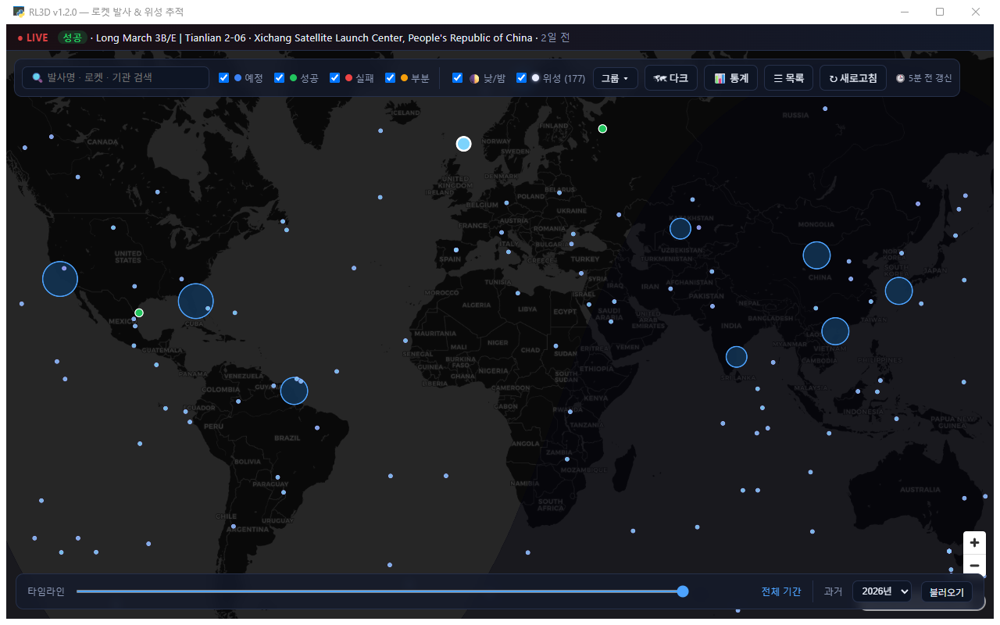

전 세계 로켓 발사를 지도에 표시하고 위성을 실시간으로 움직이는 Windows 데스크톱 앱. 통과 예측·지상궤적·낮밤 터미네이터까지 직접 계산한다.
네트워크와 캐싱은 파이썬이 맡고 JS 는 받은 JSON 을 그린다. 무거운 요청을 JS 에서 직접 하지 않는다.
발사 정보는 Launch Library 2, 위성 궤도는 Celestrak TLE 에서 받는다. 위성 위치는 SGP4 로 매 초 계산해 지도에 찍는다.
관측 위치를 지도에서 찍으면 향후 24시간의 통과를 시각·방위·최대고도까지 낸다 — 외부 API 없이 직접 계산한다.
API 한도가 시간당 약 15회라 캐싱이 설계의 출발점이다. 발사 15분 · TLE 2시간 TTL 로 시간당 약 8요청에 맞춘다. 실패하면 오래된 캐시라도 반환해 화면이 비지 않게 한다.

화면 대부분이 지도라, 틀리는 방식도 «아무것도 안 보인다» 쪽으로 몰렸다. 기능 소개가 아니라 판단 기록이라 «이건 아직 안 쟀다» 도 그대로 적는다. 각 노트 끝에 근거 커밋이 걸려 있다.